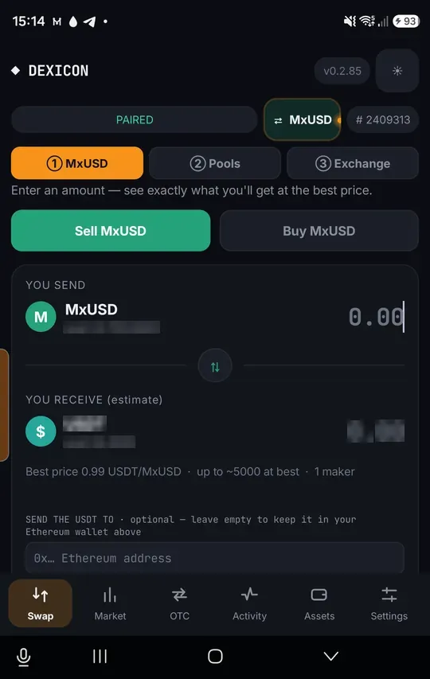
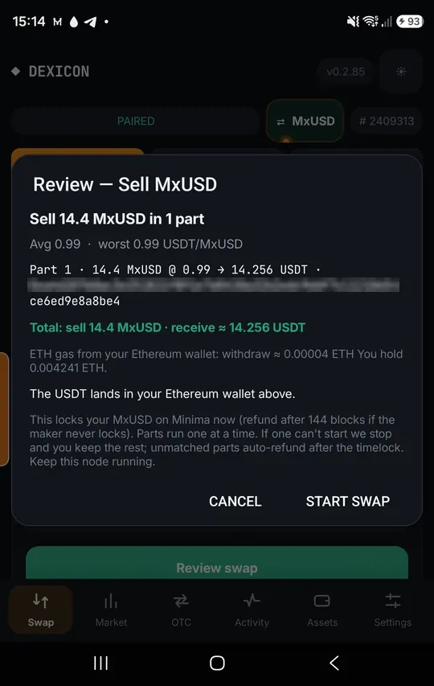
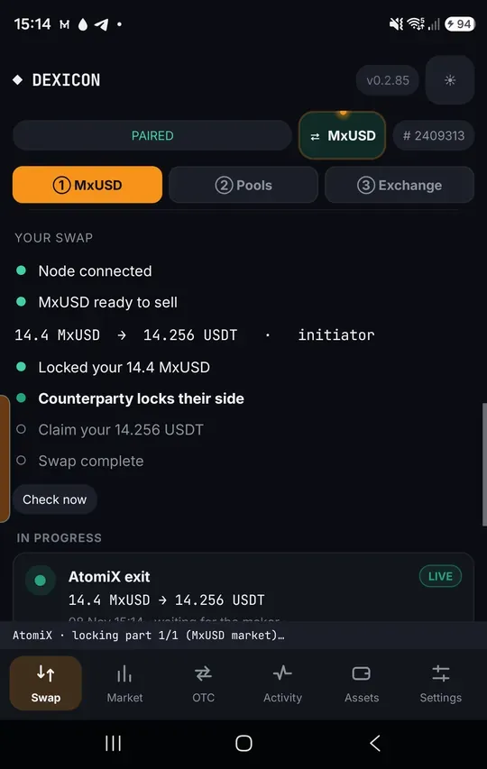
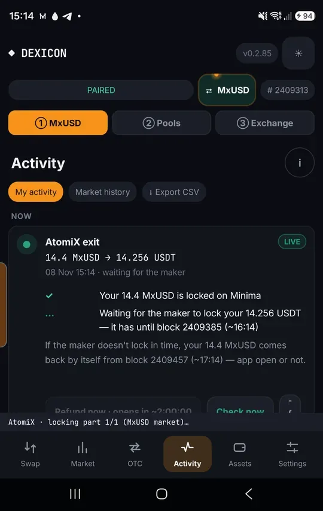
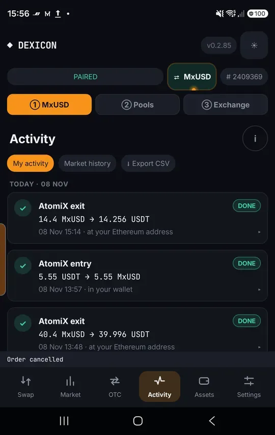

Sell MxUSD for USDT
Swap MxUSD on Minima for USDT on Ethereum. You lock your MxUSD first; the maker locks USDT; you claim it to your node’s Ethereum address.
Choose Sell MxUSD
In ① MxUSD › Swap, tap Sell MxUSD and enter the amount. You can send the USDT to another Ethereum address, or leave it blank to keep it in your node’s wallet.

Review and start
Check the parts, the price and where the USDT will land, then tap Start swap.
If the maker never locks their USDT, your MxUSD comes back by itself after its block deadline.

Your MxUSD is locked on Minima
The checklist shows your lock, then waits for the maker to lock their side on Ethereum.

Follow it in Activity
AtomiX exit stays live with the deadline shown in blocks. Nothing needs your attention unless something stalls.

Done
You claimed the USDT; the row turns Done and the USDT is in your Ethereum wallet.
